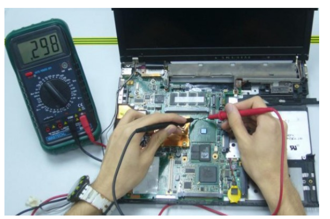
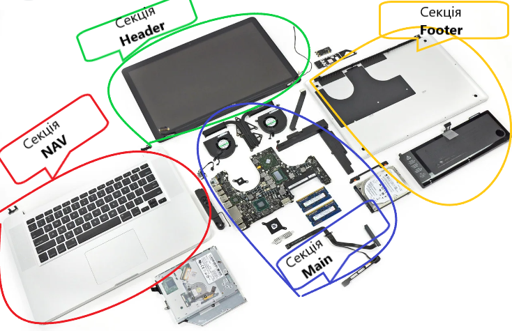

______________Ремонт техніки Ноутбуки Планшети Телефони _____________
ДІАГНОСТИКА КОМП'ЮТЕРА
РЕМОНТ МАТЕРИНСЬКИХ ПЛАТ У НОУТБУКАХ
РЕМОНТ КОРПУСУ ТА ПЕТЕЛЬ
ЗАМІНА МАТРИЦІ НОУТБУКА
ЗАМІНА КЛАВІАТУРИ
ЗАМІНА ТЕРМОПАСТИ
______________________А це приклад структури верстки HTML на прикладі ноутбука___________________

Секція Header
Це верхня частина так звана шапка сайту/блоку у випадку ноутбука зображено матриця або єкран, кришка матриці+рамка матриці, це є верхня цастина ноутбука.
Секція Nav
зазвичай, визначає, групу посилань, що є навігацією по сайту. Такі посилання зазвичай ведуть на інший розділ, головну сторінку, контакти й інше. у випадку ноутбука зображено так званий палмрест або топ за допомогою якого серфимо,навігуємо,керуємо.
Секція Main
Це головна частина сторінки її контентна складова у випадку ноутбука зображено його вміст - це материнська плата,оперативна память,жорсткий диск, система охолодження,динаміки, шлейфи.
Секція Footer
це так званий підвал сайту, його нижня частина, куди власники ресурсів заносять достатньо важливу інформацію, проте вона одночасно не відноситься до пункту першорядної важливості. у випадку ноутбука, зображено нижня частина ноутбука ще часто описують як корито.
________________________________________ Трохи про методологію БЄМ на прикладі того ж ноутбука__________________________________
1.Методологія БЄМ - це список правил для фронтенд-проєктів, що та де повинно розміщуватись для орієнтації.
2.Ситуація наступна, Анжела повідомляє, що хотіла би змінити зображення товару, та опис до них й верстальщик вже розуміє, щo це головна частина сторінки її контентна складова.
3.Візьмемо ситуацію майстра ремонтів ноутбуків. Клієнт повідомляє, що у нього проблема з клавіатурою не всі клавіші працюють й майстер вже розуміє в якій частині йому шукати несправніть.